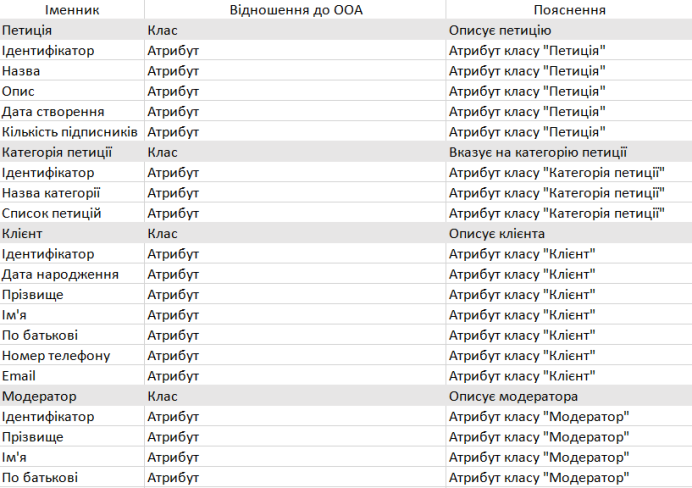
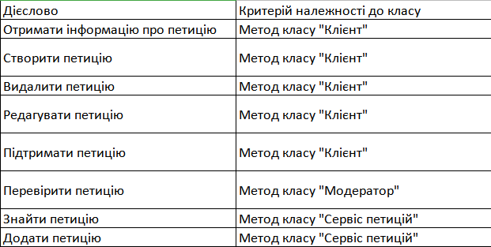
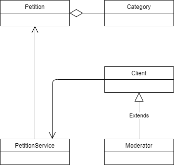
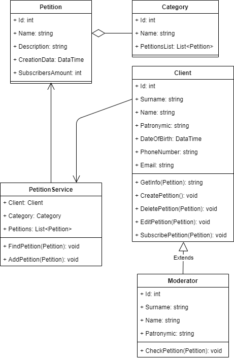
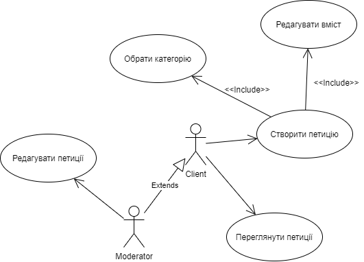
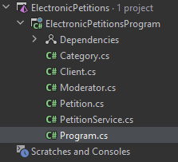
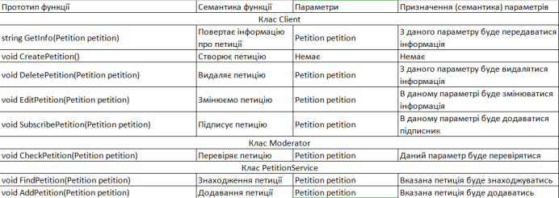

I Характеристика об’єкта автоматизації
1. Постановка задачі
1.1. Детальний опис предметного середовища (об’єкта управління), що моделюється
Об’єктом автоматизації для моделювання роботи інформаційної системи збору та обробки електронних петицій. Користувач має змогу створити власну петицію. У користувача є змога вибрати тип петиції, який підходить під її зміст. Користувач може додати опис, теги та фотографії. Створена петиція додається до акаунту користувача. Користувач може редагувати чи видалити петицію. В сервісі є модератори, які мають змогу переглядати чи видаляти створені петиції.
1.2. Мета розробки проекту (кінцеві результати роботи системи)
Метою розробки проекту :
- створення зручної платформи для збору та обробки електронних петицій
- полегшення створення електронних петицій
- полегшення модерування створених петицій
- покращення системи пошуку електронних петицій
1.3. Бізнес-задачі, що моделюються в системі, для досягнення мети
1. Створення петиції
2. Редагування петиції
3. Видалення петиції
4. Перевірка петиції
5. Пошук петиції
1.4. Бізнес-процеси, що здійснюються в системі, що моделюється
1. Показати існуючі петиції
2. Показати вибір категорії петиції
3. Показати меню редагування петиції
4. Показати повідомлення про створену петицію
1.5. Сценарій дій системи (з т. з. користувача)
1. Клієнт переходить в меню створення петиції
2. Клієнт обирає категорію петиції
3. Клієнт редагує вміст петиції
4. Клієнт завершує створення петиції
5. Клієнт маг змогу переглянути петиції
6. Модератор має змогу редагувати створені петиції
2.1.Лінгвістичний інформаційний аналіз у вигляді таблиці іменників/дієслів
Імменики
Дієслова
2.2.Об’єктно-орієнтовна декомпозиція предметного середовища
2.3. Функціональні вимоги замовника - UML-діаграми
3.1. Проектування структури ПЗ - UML-діаграма класів, з обґрунтуванням типів зв’язків між класами, атрибутами та методами
4.1. Файлова структура проекту
4.2 Специфікації методів у вигляді таблиці з переліком сигнатури методів, семантики методів та їх параметрів.
5.1 Посилання на папку з проектом
Посилання на гугл-диск5.2 Exe-file
.exe